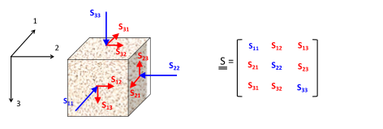
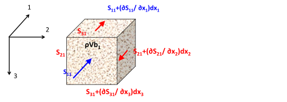
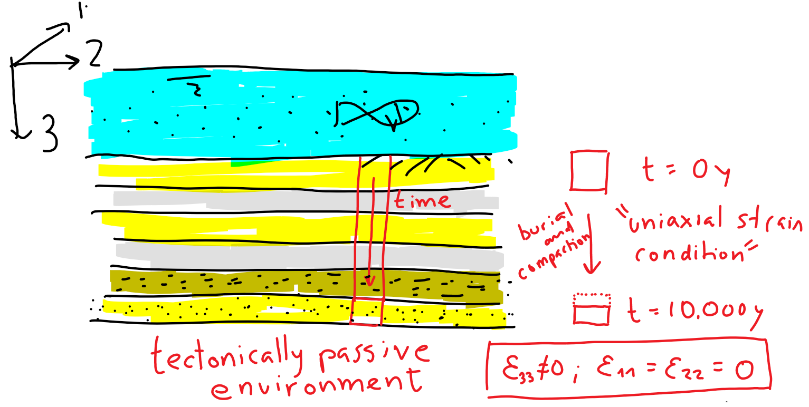
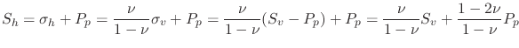
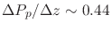
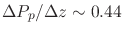

Next: 4. Rock Yield and Failure Up: Introduction to Energy Geomechanics Previous: 2. Subsurface Stresses and Pore Contents
Consider a 3D space with a given right-handed orthogonal coordinate system
 ,
,
 ,
,
 in directions 1, 2 and 3 (Figure 3.2).
In a right-handed coordinate system, the first element of the base
is your index finger, the second element of the base
is your middle finger, and the third element of the base
is your thumb (all in your right hand).
in directions 1, 2 and 3 (Figure 3.2).
In a right-handed coordinate system, the first element of the base
is your index finger, the second element of the base
is your middle finger, and the third element of the base
is your thumb (all in your right hand).
The number that represents the value of a scalar (such as temperature  or pore pressure
or pore pressure  ) at a given point
) at a given point
 is independent of the coordinate system orientation and origin (Figure 3.1).
However, the numbers that represent the value of a vector (such as velocity
is independent of the coordinate system orientation and origin (Figure 3.1).
However, the numbers that represent the value of a vector (such as velocity  or force ) or a tensor depend on the coordinate system.
A tensor, like stress, also depends on the coordinate system used to express its numerical values.
Read the values
or force ) or a tensor depend on the coordinate system.
A tensor, like stress, also depends on the coordinate system used to express its numerical values.
Read the values  as the stress on face perpendicular to base vector
as the stress on face perpendicular to base vector
 in the direction of base vector
.
is positive if after a displacement
in the direction of base vector
.
is positive if after a displacement  , points in opposite direction to
(Figure 3.2).
, points in opposite direction to
(Figure 3.2).
All stresses can be written as a matrix (Figure 3.2).
The diagonal terms correspond to normal stresses.
The off-diagonal terms correspond to shear stresses.
Off-diagonal stresses are symmetric
 (
( ) because of angular momentum equilibrium (the element does not spin around any axis).
Hence, the stress tensor is symmetric with respect to the diagonal (top-left to bottom-right).
) because of angular momentum equilibrium (the element does not spin around any axis).
Hence, the stress tensor is symmetric with respect to the diagonal (top-left to bottom-right).
 |
Since the stress tensor is symmetric and is composed by all real numbers, there exist 3 real-valued eigenvalues that we call principal stresses and denote
.
Each principal stress (eigenvalue) is associated with a principal direction (eigenvector).
Principal directions are always perpendicular to each other in a cartesian coordinate system.
When we write the stress tensor in the coordinate system aligned with directions of the principal stresses, the stress tensor results in diagonal elements populated by the principal stresses and zeros in the off-diagonal places.
Usually, the principal stresses are ordered from top to bottom starting with  at the top (Figure 3.3).
at the top (Figure 3.3).
![\includegraphics[scale=0.55]{.././Figures/split/4-4.pdf}](img287.svg) |
EXAMPLE 3.1: For the following stress tensor obtained for the Neuquen Basin: a) calculate the eigenvalues (principal stresses), b) calculate eigenvectors (principal directions), c) answer what the stress regime is, and d) calculate the angle between the North and the direction of  in clockwise direction.
in clockwise direction.
![$\displaystyle \underset{=}{\sigma} =
\left[
\begin{array}{ccc}
\sigma_{NN} ...
...ccc}
8580 & 100 & 0 \\
100 & 9900 & 0 \\
0 & 0 & 9000
\end{array} \right]$](img288.svg) psi
psi
Note: The stress tensor is written in the North-East-Down coordinate system.
SOLUTION
First, find an appropiate math solver that can calculate eigenvalues and eigenvectors (Python, Matlab, Wolfram Alpha, etc.)
We will use Wolfram Alpha online in this solution.
Go to https://www.wolframalpha.com/ and enter:
eigenvalues

The answer to this querry is (click in “approximate forms”):

and

a,b) The principal stresses are

Figuring out what are horizontal and vertical stresses depends on the eigenvectors.
First, let's start with the easiest one.
Eigenvector
 points straight in the downward direction, i.e., no horizontal component either in N or E directions (first two coordinates are zeros).
Hence,
points straight in the downward direction, i.e., no horizontal component either in N or E directions (first two coordinates are zeros).
Hence,
 is in the vertical direction and is
is in the vertical direction and is  .
The other two (
.
The other two ( and
and  ) are the horizontal stresses, where
and therefore
) are the horizontal stresses, where
and therefore
 .
.
c) is the intermediate stress in this case, hence, this location is under strike-slip stress regime according to the Andersonian classification.
d) Eigenvector
 gives the direction of
.
Let's read the vector
gives the direction of
.
Let's read the vector  according to the NED coordinate system: it goes North +0.0753277 units, it goes East +1.0 units, it goes Down 0.0 units.
Drawing this in a 3D coordinate system results in a vector in the NE horizontal plane pointing mostly towards the East.
The angle between the East axis and the vector is
according to the NED coordinate system: it goes North +0.0753277 units, it goes East +1.0 units, it goes Down 0.0 units.
Drawing this in a 3D coordinate system results in a vector in the NE horizontal plane pointing mostly towards the East.
The angle between the East axis and the vector is
 rad
rad , i.e.,
from the East axis towards the North axis.
Hence, the angle between the North and the vector is
, i.e.,
from the East axis towards the North axis.
Hence, the angle between the North and the vector is
 .
.

Equilibrium of stresses requires summation of forces in all directions to be zero when the object is not moving (no acceleration  , thus
, thus
 ).
Consider the schematic in Figure 3.4.
Summation of forces in direction 1, where the term
).
Consider the schematic in Figure 3.4.
Summation of forces in direction 1, where the term
 is the body force component, proportional to the solid mass density
is the body force component, proportional to the solid mass density  and volume , and the acceleration component , requires
and volume , and the acceleration component , requires
![\begin{displaymath}\begin{array}{rcl}
\sum F_1 & = & 0 \\
\sum F_1 & =
& + S_{1...
...] dx_1 dx_2 \\
& & - \rho (dx_1 dx_2 dx_3) b_1 = 0
\end{array}\end{displaymath}](img311.svg) |
which eventually reduces to the following equation when canceling terms and dividing by the element volume
 |
(3.1) |
 |
A generalization of equilibrium in all directions with all stresses (Figure 3.2) yields the Cauchy's equilibrium equations:
Consider a half-space where the surface coincides with the origin of the coordinate system and gravity  points in direction 3, hence
points in direction 3, hence  in Eq. 3.2.
We assume infinite extension in directions 1 and 2, therefore there are no variations in directions 1 and 2, such that
.
Notice there are 6 unknowns and 3 equations in Eq. 3.2 (remember
).
The only equation we can solve is the third one.
Integration of the third equation yields the (vertical) stress ,
in Eq. 3.2.
We assume infinite extension in directions 1 and 2, therefore there are no variations in directions 1 and 2, such that
.
Notice there are 6 unknowns and 3 equations in Eq. 3.2 (remember
).
The only equation we can solve is the third one.
Integration of the third equation yields the (vertical) stress ,
 |
(3.3) |
equivalent to Eq. 2.11.
![\includegraphics[scale=0.45]{.././Figures/split/4-7.pdf}](img319.svg) |
You may wonder “what about  and ?
The horizontal stresses cannot be determined with the current equations.
The solution to this problem will be developed in section 3.3.4.
and ?
The horizontal stresses cannot be determined with the current equations.
The solution to this problem will be developed in section 3.3.4.
Figure 3.6 shows an example of an arbitrary shaped continuous solid subjected to external stresses  , external forces , body forces
, external forces , body forces  , and displacement constraints (bottom fixture).
As highlighted before, notice that there are 6 unknowns (9 unknowns if displacements are included) and 3 equations in Cauchy's equations of equilibrium (Eq. 3.2).
The solution of a general problem with arbitrary boundary conditions requires more equations to have a determined problem (as many equations as unknowns).
The solution of such problem requires knowledge of the material properties.
We need equations that relate displacement to stresses. These equations divide in two types:
, and displacement constraints (bottom fixture).
As highlighted before, notice that there are 6 unknowns (9 unknowns if displacements are included) and 3 equations in Cauchy's equations of equilibrium (Eq. 3.2).
The solution of a general problem with arbitrary boundary conditions requires more equations to have a determined problem (as many equations as unknowns).
The solution of such problem requires knowledge of the material properties.
We need equations that relate displacement to stresses. These equations divide in two types:
![\includegraphics[scale=0.55]{.././Figures/split/4-8.pdf}](img324.svg) |
Applications of stresses result in solid deformation and displacements. Figure 3.7 shows an example of a solid body and the corresponding displacement vector field (traces the displacements from the original to the deformed state). In this particular case, the solid is anchored at the bottom and deforms due to the application of a force (from left to right) on the top. Hence, displacements at the bottom are zero and displacements on the top are the maximum.
![\includegraphics[scale=0.55]{.././Figures/split/4-DispStrains.PNG}](img325.svg) |
Yet, absolute displacements are not enough to determine stresses. A solid may translate or rotate in space without development of any internal stresses required to equilibrate external actions (imagine a cookie “floating” in zero gravity within the International Space Station https://www.youtube.com/watch?v=q5uV4fTV0Zo).
Let's look at Figure 3.8 in order to relate displacements to strains:
) in direction 1 only. This type of deformation produces a change of volume of the solid and therefore contributes to volumetric strain. The resulting deformation or strain (change of length divided original length) is
 |
(3.4) |
 |
(3.5) |
![$\pi - \left[ \pi - \arctan(\Delta u_1 / \Delta x_2) + \arctan(\Delta u_2 / \Delta x_1) \right] $](img328.svg) . The shear strain is 1/2 of the total change of the angle and therefore (for small changes
. The shear strain is 1/2 of the total change of the angle and therefore (for small changes
 )
)
| (3.6) |
Strains do not quantify the absolute value of displacements, but its variation in space (derivative with respect to ). All other strains are found with similar equations in the 3D case. Similarly to the stress tensor, strains can be organized in a tensor where elements in the diagonal contribute to volumetric strain, and off-diagonal elements are shear strains.
The summation of all diagonal terms yields the volumetric strain
EXAMPLE 3.2: Demonstrate the equality in Eq. 3.8 from simple geometrical concepts. Hint: the initial volume of the solid is
 .
.
SOLUTION
The definition of volumetric strain is the ratio between the change of volume  and the initial volume
and the initial volume  :
:
For an elementary cubic volume with initial volume and volume after deformation , the equation above results
![$\displaystyle \varepsilon_{vol} = \frac{[(\mathrm{d} x_1 + \mathrm{d}u_1)(\math...
...athrm{d} x_2 \mathrm{d} x_3)]}{(\mathrm{d} x_1 \mathrm{d} x_2 \mathrm{d} x_3)}
$](img341.svg)
Let us discard all the products containing
and also
 because they are much smaller than the other terms including just one
because they are much smaller than the other terms including just one
 (
(
 ), then
), then
Constitutive equations tell us how a solid deforms (in time) as a response to stresses, to changes of temperature and to changes of pore pressure among others. How to choose a constitutive equation depends on the material properties, the magnitude of strain changes, the magnitude of stresses, and the loading rate among other factors.
The simplest constitutive relationship for solids is linear elasticity, in which stresses and strains are linearly related by constant coefficients. The examples in Figure 3.10 correspond to applications of linear elasticity in various dimensions:
 [m] in a spring with mechanical constant
[m] in a spring with mechanical constant  [N/m] is
[N/m] is
 |
(3.9) |
 . The force required to produce an elongation [m] is inversely proportional to , and proportional to proportional to , and
. The force required to produce an elongation [m] is inversely proportional to , and proportional to proportional to , and  (the stiffness modulus of the solid), such that
(the stiffness modulus of the solid), such that
| (3.10) |
| (3.11) |
 is proportional to the strain tensor
through the stiffness tensor
is proportional to the strain tensor
through the stiffness tensor
 |
(3.12) |
Consider a prismatic solid with length to which we apply a stress
 on top face 3 (Figure 3.11).
The bottom face is not allowed to move in direction 3 but it can slide sideways.
The four other faces are free to move in all directions.
Notice that the top face can also deform in directions 1 and 2.
The Young modulus is defined as the ratio between the applied stress
and the resulting strain (in the direction of the applied stress)
on top face 3 (Figure 3.11).
The bottom face is not allowed to move in direction 3 but it can slide sideways.
The four other faces are free to move in all directions.
Notice that the top face can also deform in directions 1 and 2.
The Young modulus is defined as the ratio between the applied stress
and the resulting strain (in the direction of the applied stress)

 (or
(or
 ) and the strain in the direction of the applied stress
These two coefficients are the two coefficients conventionally used as elasticity constants in continuum mechanics.
We will see later that in the subsurface we almost never find conditions of laterally “unconfined” stress loading like the one shown in Figure 3.11.
) and the strain in the direction of the applied stress
These two coefficients are the two coefficients conventionally used as elasticity constants in continuum mechanics.
We will see later that in the subsurface we almost never find conditions of laterally “unconfined” stress loading like the one shown in Figure 3.11.
![\includegraphics[scale=0.65]{.././Figures/split/4-14.pdf}](img367.svg) |
The real behavior of rocks differs from the linear elastic assumption.
Figure 3.12 shows a schematic representation of a typical unconfined loading test.
The figure plots axial stress  in the vertical axis and axial strain
in the vertical axis and axial strain
 in the horizontal axis.
Often, rock plugs are not perfectly parallel or may have some microcracks.
Both features make the initial loading stress-strain behavior look less stiff than the actual rock stiffness.
After the initial loading, the rock may show a linear response -where the Young modulus is measured- followed by softening approaching rock failure and the peak stress.
When the test is performed under unconfined conditions, the peak stress is termed the “unconfined compressive strength (UCS)” of the rock (further explained in Section 4).
The Poisson ratio can be measured in the same range of the measurement of when lateral strain transducers are available.
in the horizontal axis.
Often, rock plugs are not perfectly parallel or may have some microcracks.
Both features make the initial loading stress-strain behavior look less stiff than the actual rock stiffness.
After the initial loading, the rock may show a linear response -where the Young modulus is measured- followed by softening approaching rock failure and the peak stress.
When the test is performed under unconfined conditions, the peak stress is termed the “unconfined compressive strength (UCS)” of the rock (further explained in Section 4).
The Poisson ratio can be measured in the same range of the measurement of when lateral strain transducers are available.
The Young modulus of sediments and rocks varies widely. Figure 3.13 shows typical values of Young's modulus.
 |
EXAMPLE 3.3: Compute the (axial) strain expected for a rock subjected to 3,000 psi of (axial) stress under unconfined axial loading for:
SOLUTION
Let us work in SI units:
 psi MPa
psi MPa MPa
MPa


 GPa
GPa
Notice that rocks can be quite stiff and even for an effective stress as large as 3,000 psi (equivalent to a depth onshore of 5,000 ft under hydrostatic pore pressure), the deformation is in the order of 1% to 0.1% or less.
A generalization of the Young's modulus and Poisson's ratio equations (Eq. 3.13 and 3.14) in all directions leads to the 3 independent equations.
| (3.15) |
In addition, shear strains
are proportional to the applied shear stress through shear modulus
![$G=E/[2(1+\nu)]$](img381.svg) , such that,
, such that,
 |
(3.16) |
Hence, all six equations permit putting together the shear strain tensor
as a function of the stress tensor
through compliance fourth-order tensor
 .
.
 |
(3.17) |
For ease of calculation, we will express the stress and strain tensors as
matrices, such that
will be a
 matrix.
This notation is called Voigt notation.
Hence, fourth-order tensor
can be expressed as a
matrix:
matrix.
This notation is called Voigt notation.
Hence, fourth-order tensor
can be expressed as a
matrix:
| (3.18) |
For example, let us apply a stress
![$\uuline{\sigma} = [0,0,\sigma_{33},0,0,0]^T$](img388.svg) as in example in Figure 3.11.
The result of
is
as in example in Figure 3.11.
The result of
is
![$\displaystyle \uuline{\varepsilon} = \left [ -\cfrac{\nu}{E} \: \sigma_{33},-\cfrac{\nu}{E} \: \sigma_{33},\cfrac{1}{E} \: \sigma_{33},0,0,0 \right]^T $](img390.svg) and
and  .
.
The inverse of the compliance matrix is the stiffness matrix
 and let us calculate stress as a function of strain.
and let us calculate stress as a function of strain.
Voigt notation is easier to code in computer codes that work with matrices.
The Lam equations are the same equations shown above but use the Lam parameters  and
and  instead of and .
For example, let us write the first equation of the product of the stiffness tensor and the strain tensor in Voigt notation:
instead of and .
For example, let us write the first equation of the product of the stiffness tensor and the strain tensor in Voigt notation:
![$\displaystyle \sigma_{11} = \cfrac{E}{(1+\nu)(1-2\nu)}
\left[ (1-\nu) \varepsilon_{11} + \nu \varepsilon_{22} + \nu \varepsilon_{33} \right]$](img395.svg) |
or equivalently
 |
where the Lam parameters are:
 |
(3.20) |
and
 |
(3.21) |
Notice that  , the shear modulus as defined above.
Putting equations in all directions together yields the complete set of Lam's equations:
, the shear modulus as defined above.
Putting equations in all directions together yields the complete set of Lam's equations:
EXAMPLE 3.4: Write the Lam equations (Eq. 3.22) in matrix format using the Voigt notation.
SOLUTION
Remember that there are only two independent constitutive parameters in linear isotropic elasticity.
The usual pair choice is and .
However, there are other options depending on the application and equations used, e.g,  and
and  .
A complete list of parameter pairs is available scrolling to the bottom in https://en.wikipedia.org/wiki/Young's_modulus.
Figure 3.14 list the most common equivalencies.
.
A complete list of parameter pairs is available scrolling to the bottom in https://en.wikipedia.org/wiki/Young's_modulus.
Figure 3.14 list the most common equivalencies.
![\includegraphics[scale=0.55]{.././Figures/split/4-21.pdf}](img404.svg) |
Porous solids deform and fail due to the application of effective stresses rather than total stress.
Hence, Hooke's law requires to use the effective stress tensor rather than the total stress tensor.
The equation
 is incorrect.
Instead, the stress-strain relationship requires effective stress:
is incorrect.
Instead, the stress-strain relationship requires effective stress:
Pore pressure has an effect on normal stresses only (fluid pressure would not be able to cause solid shear strains). Hence, only pore pressure is subtracted from the diagonal terms of the total stress tensor. The subtracted value is the same in all directions because pore pressure is the same in all directions at a given point location.
Rigorously, the effective stress tensor needs a correction of pore pressure by the Biot coefficient  that accounts for solid grain deformation with changes in pore pressure.
that accounts for solid grain deformation with changes in pore pressure.
 |
(3.24) |
For most problems, the assumption of
 is satisfactory.
The rock matrix of tight sandstones and shales may have a Biot coeffiecient as low as
.
The theory of poroelasticity is covered in the “Advanced Geomechanics” course with a brief introduction in Section 3.7.1.
is satisfactory.
The rock matrix of tight sandstones and shales may have a Biot coeffiecient as low as
.
The theory of poroelasticity is covered in the “Advanced Geomechanics” course with a brief introduction in Section 3.7.1.
Let us revisit the problem of stress calculation in a half-space, such as the Earth's shallow subsurface.
We already know that the vertical total stress (
 ) is a function of depth and rock bulk mass density.
) is a function of depth and rock bulk mass density.
 |
(3.25) |
The effective vertical stress will be
 |
(3.26) |
Let us now assume that the half space did not deform in horizontal directions (
 ), usually known as a “tectonically passive environment”. This means that the solid is laterally contained at “repose” and no additional horizontal strains have been added either compressive or tensile.
Such is the case of a sedimentary basin with no additional tectonic strains.
), usually known as a “tectonically passive environment”. This means that the solid is laterally contained at “repose” and no additional horizontal strains have been added either compressive or tensile.
Such is the case of a sedimentary basin with no additional tectonic strains.
 |
Let us now use Equation 3.23 together with the equilibrium equation.
Shear strains are zero.
Hence
![$\uuline{\varepsilon} = [0,0,\varepsilon_{33},0,0,0]^T$](img414.svg) .
Then, the multiplication of
.
Then, the multiplication of
 , results in
, results in
 |
(3.27) |
Let us express
as a function of
, and plug it in the equation for horizontal stresses
and
 .
The result is
.
The result is
| (3.28) |
or equivalently
For typical values of
 , the horizontal stress coefficient is
, the horizontal stress coefficient is
 (Figure 3.17).
Thus, the effective horizontal stress is approximately one third of the effective vertical stress.
Contrary to a fluid, the solid does not push sideways with all its weight.
It pushes sideways with just a fraction of its weight proportionally to its tendency to deform sideways, i.e., the Poisson ratio.
Notice that
(Figure 3.17).
Thus, the effective horizontal stress is approximately one third of the effective vertical stress.
Contrary to a fluid, the solid does not push sideways with all its weight.
It pushes sideways with just a fraction of its weight proportionally to its tendency to deform sideways, i.e., the Poisson ratio.
Notice that
 implies
.
An “effective”
is applicable for fluids, soft rocks under undrained loading, and salt rocks.
implies
.
An “effective”
is applicable for fluids, soft rocks under undrained loading, and salt rocks.
 |
The total horizontal stresses are obtained by adding pore pressure to the effective horizontal stresses:
 and
and
 .
.
Equation 3.29 allows us to approximate a lower bound for the fracture gradient, that is, the pressure required to open a hydraulic fracture.
Such pressure will be equal or greater than the minimum horizontal total stress  (assuming zero tectonic strains):
(assuming zero tectonic strains):
|  | (3.30) |
The gradient is the variation of pressure (or stress) with depth, i.e., derivative with respect to depth  .
Assuming that the material properties are constant, then,
.
Assuming that the material properties are constant, then,
For example, for onshore conditions with typical values
 psi/ft,
 psi/ft, and
psi/ft,
 psi/ft, and
 , the fracture gradient is
, the fracture gradient is
 psi/ft. Figure XX shows a schematic example of the calculated fracture gradient.
psi/ft. Figure XX shows a schematic example of the calculated fracture gradient.
 |
Let us now relax the assumption of horizontal strains equal to zero, such that they are not zero
 , but are known quantities.
We use the equation
, but are known quantities.
We use the equation
 again. Shear strains are zero.
Hence
again. Shear strains are zero.
Hence
![$\uuline{\varepsilon} = [\varepsilon_{11},\varepsilon_{22},\varepsilon_{33},0,0,0]^T$](img430.svg) .
The resulting equations are,
.
The resulting equations are,
 |
(3.32) |
Let us now substitute
in the equations of
and
as a function of
. The result is:
| (3.33) |
Horizontal strains are usually caused by tectonic plate movement.
Hence, we can call them “tectonic strains” and say that this is a “tectonically active” environment, particularly for large compressive horizontal strains that may increase horizontal stress over the vertical stress.
Let us call
 the maximum (compressive) tectonic strain, and
the minimum tectonic strain in a given direction.
As a result the maximum effective horizontal stress and minimum horizontal stresses are:
the maximum (compressive) tectonic strain, and
the minimum tectonic strain in a given direction.
As a result the maximum effective horizontal stress and minimum horizontal stresses are:
where is called the plane strain modulus. We will see later that the plane strain modulus, rather than the Young's modulus, appears in many of the equations of interest to subsurface applications. These equations have been coded in a Jupyter notebook available at https://mybinder.org/v2/gh/dnicolasespinoza/GeomechanicsJupyter/master?filepath=HorizontalStresses_Widget.ipynb. The above algorithm further assumes a linear increase of strain with depth.
The following workflow is valid to calculate horizontal total stress with any constitutive (rock property) model:
.
 is given.
is given.
 :
:
EXAMPLE 3.5:
Calculate the total horizontal stresses in a section of the Barnett Shale located at 7,950 ft (TVD) using the theory of linear elasticity.
Assume a constant vertical stress gradient
 MPa/km, overpressure parameter
, shale Young's modulus
MPa/km, overpressure parameter
, shale Young's modulus
 psi, Poisson's ratio
, and tectonic strains
psi, Poisson's ratio
, and tectonic strains
 and
and
 .
.
SOLUTION
At a depth of 7950 ft


 |
Finally, let us compute the total horizontal stresses by adding pore pressure:
 |
Horizontal stresses tend to be different in most basins, hence,
 .
In practice, differences
MPa (100 psi) tend to be enough to force hydraulic fractures to grow mostly perpendicular to
.
In practice, differences
MPa (100 psi) tend to be enough to force hydraulic fractures to grow mostly perpendicular to  in places subjected to normal faulting or strike slip stress regime.
Locations with small horizontal stress anisotropy (mostly normal faulting sites) impose less control on orientations of hydraulic fractures (Chapter 7) and on orientation of faults (Chapter 5).
Polygonal faults (Chapter 5 - [update link]) are an example of normal fault growth with strike in all directions because
in places subjected to normal faulting or strike slip stress regime.
Locations with small horizontal stress anisotropy (mostly normal faulting sites) impose less control on orientations of hydraulic fractures (Chapter 7) and on orientation of faults (Chapter 5).
Polygonal faults (Chapter 5 - [update link]) are an example of normal fault growth with strike in all directions because
 .
.
The rock pore volume compressibility  is a critical parameter in the fluid flow mass conservation equation and therefore on the diffusivity equation (1D example):
is a critical parameter in the fluid flow mass conservation equation and therefore on the diffusivity equation (1D example):
 |
(3.35) |
Where the total compressibility is
 .
Reservoir simulators usually calculate the fluid compressibility
.
Reservoir simulators usually calculate the fluid compressibility
 based in phase behavior, hence, the only required input is .
For example, compaction drive is proportional to rock compressibility (see https://petrowiki.org/Compaction_drive_reservoirs).
based in phase behavior, hence, the only required input is .
For example, compaction drive is proportional to rock compressibility (see https://petrowiki.org/Compaction_drive_reservoirs).
The pore volume compressibility tells us what the change of pore volume  is due to a change in pore pressure:
is due to a change in pore pressure:
 |
(3.36) |
The equation above captures reservoir boundary conditions in which the total vertical stress remains constant (overburden above the reservoir does not change) and there is no change of lateral strain
 , a condition also termed as “uniaxial strain” deformation.
Such condition is appropriate in long and thin reservoirs with a compliant caprock (Figure 3.19).
, a condition also termed as “uniaxial strain” deformation.
Such condition is appropriate in long and thin reservoirs with a compliant caprock (Figure 3.19).
The measurements of are derived from bulk volume measurements.
Let us assume that the change of pore volume
is equal to the change of bulk volume
 , which means that all bulk deformation is caused by change of porosity.
Hence it is possible to rewrite the definition of as
, which means that all bulk deformation is caused by change of porosity.
Hence it is possible to rewrite the definition of as
 |
(3.37) |
Porosity is defined as
 and the term between parenthesis is defined as the bulk compressibility under uniaxial condition (notice
and the term between parenthesis is defined as the bulk compressibility under uniaxial condition (notice
 ).
Hence, the parameter is linked to the bulk rock compressibility through porosity:
).
Hence, the parameter is linked to the bulk rock compressibility through porosity:
 |
(3.38) |
where the bulk compressibility with no lateral strain is approximately equal to the inverse of the bulk constrained modulus
 , where
for an isotropic elastic solid.
The approximation is due to a correction needed to account for grain compressibility.
Finally, we can calculate the uniaxial strain pore compressibility using the typical mechanical parameters and as,
, where
for an isotropic elastic solid.
The approximation is due to a correction needed to account for grain compressibility.
Finally, we can calculate the uniaxial strain pore compressibility using the typical mechanical parameters and as,
 |
Unfortunately, the theory of linear elasticity is quite limited to capture the visco-elasto-plastic behavior of rocks upon depletion during long times and with large strains. Hence, Eq. 3.39 is just a first order approximation.
Typical values of pore volume compressibility vary from 2 to 30
 psi
psi , where
psi
, where
psi sip.
Stiff well cemented rocks have low pore volume compressibility
sip.
Stiff well cemented rocks have low pore volume compressibility
 sip while uncemented loose sediments tend to have high pore volume compressibility
sip while uncemented loose sediments tend to have high pore volume compressibility
 sip.
sip.
EXAMPLE 3.6: Calculate the pore compressibility of a rock tested in the laboratory with porosity
 , Young's modulus
, Young's modulus  GPa, and
GPa, and
 . Provide the solution in [
. Provide the solution in [ psi] units.
psi] units.
SOLUTION
The constrained modulus is
![$\displaystyle C_{pp} = \frac{1}{M \phi} = \frac{1}{1.6 \times 10^{6} \text{psi}...
...} = 3.1 \: [10^{6} \text{psi}]^{-1} = 3.1 \: \mu \text{sip} \: \: \blacksquare
$](img478.svg)
The general solution of a linear elasticity problem requires combining the equilibrium, kinematic, and constitutive equations.
The result is a differential equation with displacement  as the unknown:
as the unknown:
where
![$\lambda = (\nu E)/[(1+\nu)(1-2\nu)]$](img481.svg) is the first Lam parameter, is the shear modulus, is the rock bulk mass density, and is the body force acceleration vector (usually gravity).
A review of the gradient , divergence
is the first Lam parameter, is the shear modulus, is the rock bulk mass density, and is the body force acceleration vector (usually gravity).
A review of the gradient , divergence
 and Laplacian
and Laplacian
 operators is available at https://en.wikipedia.org/wiki/Vector_calculus_identities.
In summary, these are all derivatives that quantify changes of displacement in space.
The full derivation of this equation can be found here: https://youtu.be/1PnQ10H2vV0.
operators is available at https://en.wikipedia.org/wiki/Vector_calculus_identities.
In summary, these are all derivatives that quantify changes of displacement in space.
The full derivation of this equation can be found here: https://youtu.be/1PnQ10H2vV0.
The solution requires knowledge of the domain geometry, boundary conditions and initial conditions. For example, a hydraulic fracture simulator solves numerically these same equations (Figure 3.20). In this class, we will see analytical solutions of this equation for 1) displacements and stresses around wellbores, and 2) displacements and stresses around planar fractures.
Real rocks are not isotropic due to layering, particle orientation during deposition, and fracturing. Sedimentary rocks are usually well explained with transverse isotropic symmetry. Vertical transverse isotropy assumes symmetry around a vertical axis such that mechanical properties are the same when measured along any direction in a horizontal plane but different in the vertical direction (the direction perpendicular to bedding). The presence of vertical fractures in a preferred orientation can break this symmetry and make the medium orthorhombic. Accurate determination of horizontal stresses with elastic models (e.g., Eq. 3.34) may need anisotropic models to properly account for rock stiffness anisotropy.
Most sedimentary rocks are stiffer in the horizontal direction than in the vertical direction  .
.
Most rocks will exhibit permanent (plastic) deformation when loaded at large strains
 .
Plastic deformation includes plastic compression strains and plastic shear strains.
The theory of elasto-plasticity is covered in the Advanced Geomechanics course https://www.youtube.com/playlist?list=PLv0npDbE5HXssC2CwCAssJs0fTkKquQFj.
Figure 3.23 shows an example of permanent deformation during a typical deviatoric loading test to measure Young's modulus.
First-time loading usually involves plastic deformation and creep.
Therefore the loading Young's modulus
.
Plastic deformation includes plastic compression strains and plastic shear strains.
The theory of elasto-plasticity is covered in the Advanced Geomechanics course https://www.youtube.com/playlist?list=PLv0npDbE5HXssC2CwCAssJs0fTkKquQFj.
Figure 3.23 shows an example of permanent deformation during a typical deviatoric loading test to measure Young's modulus.
First-time loading usually involves plastic deformation and creep.
Therefore the loading Young's modulus  results smaller than the unloading modulus
results smaller than the unloading modulus
 .
While calculation lumps elastic, plastic, and creep strains,
involves mostly elastic strains.
Notice the the re-loading modulus is similar to the unloading modulus
.
While calculation lumps elastic, plastic, and creep strains,
involves mostly elastic strains.
Notice the the re-loading modulus is similar to the unloading modulus
 because a re-loading path is not a first-time loading.
because a re-loading path is not a first-time loading.
![\includegraphics[scale=0.55]{.././Figures/split/LoadingUnloading.pdf}](img492.svg) |
So far, we have assumed that rock strain-stress response is independent of loading rate, however, this is not true. The stiffness of rocks is not the same if loaded in a time frame of thousands of years (geological time), years (reservoir production time), or during a few minutes (drilling and laboratory time). Rocks tend to be softer and more ductile as the loading time frame increases.
Another manifestation of visco-elasticity is time-dependent deformation, usually known as “creep”. Whenever a change of stress is applied and set constant, deformations may continue with time. An example of this type of response is when drilling through salt rocks. Stresses intensify around the wellbore after the hole is bored. The wellbore walls will deform if left uncased and stick to the drilling string.
One other manifestation of visco-elasticity is time-dependent stress change or stress relaxation. Whenever a change of strain is applied and set constant, stresses may relax with time. For example, unconsolidated sands may relax horizontal stresses with time after a tectonic strain is applied (Figure 3.27). Therefore, neglecting visco-elasticity may result in an overestimation of horizontal stresses in unconsolidated sands with a purely elastic model.
![\includegraphics[scale=0.45]{.././Figures/split/4-StressRelaxField.PNG}](img496.svg) |
When rocks deform, most of the deformation transfers into changes of porosity.
As a matter of fact, the solid phase can also deform and change volume.
In that case the equation that links stresses and deformations
 needs to be corrected according to Biot's effective stress:
needs to be corrected according to Biot's effective stress:
 |
(3.41) |
where is the Biot coefficient and
is the identity tensor.
In the case of linear elastic and isotropic porous media, the Biot coefficient is:
 |
(3.42) |
where
is the drained bulk modulus of the porous solid and is the unjacketed bulk modulus.
The unjacketed bulk modulus is equal to the mineral bulk modulus
 when all porosity is connected and the rock has a mono-mineral composition.
The values of the Biot coefficient range from the value of porosity to 1.
Most rocks and sediments subjected to large depths have a Biot coefficient that ranges from
when all porosity is connected and the rock has a mono-mineral composition.
The values of the Biot coefficient range from the value of porosity to 1.
Most rocks and sediments subjected to large depths have a Biot coefficient that ranges from  0.4 to 0.95, decreasing in value as rocks get stiffer.
In anisotropic media, the poroelasticity correction factor becomes a tensor
.
The corrections for poroelasticity
0.4 to 0.95, decreasing in value as rocks get stiffer.
In anisotropic media, the poroelasticity correction factor becomes a tensor
.
The corrections for poroelasticity
 become significant in tight rocks with high stiffness, and low and unconnected porosity.
become significant in tight rocks with high stiffness, and low and unconnected porosity.
Changes of temperature in solids change the equilibrium distance between molecules, and therefore induce strains. Imagine a solid heated up, but not allowed to dilate in vertical direction (Figure 3.28). The result is an increase of stress in vertical direction rather than a deformation in vertical direction.
The coefficient of thermal dilation  quantifies strains as a function of changes of temperature at constant pressure
quantifies strains as a function of changes of temperature at constant pressure  , and it is defined as
, and it is defined as
 |
(3.43) |
Typical linear thermal dilation coefficients of rock range from 5 to 10
1/C .
You may compare this range to the linear thermal dilation coefficient of steel
1/C and water
.
You may compare this range to the linear thermal dilation coefficient of steel
1/C and water
 1/C.
1/C.
Under unconstrained (displacement) conditions, a negative change in temperature causes shrinkage and a positive change in temperature causes dilation. The elastic equations extended to consider thermal changes make explicit that stresses can be changed as a result of a change in temperature and/or as a result of a change of volumetric strains.
Eq. 3.44 does not include the effects of pore pressure. The coupled thermo-poro-elastic equations are covered in the Advanced Geomechanics course.
Thermal(-induced) stresses can cause reductions in fracture gradient when drilling with relatively cold drilling mud. Thermal(-induced) stresses can also cause enhanced fractured reactivation when injecting cold fluids in a hot reservoir, such as in deep geothermal energy recovery.
EXAMPLE 3.7: Derive an expression of the thermal swelling stress (in vertical direction) for the example shown in Figure 3.28.
SOLUTION
Let us assume the axis 3 in the vertical direction, then
 ,
,
.
Then, for
,
,
.
Then, for
 , a simplification of Eq. 3.44 results in,
, a simplification of Eq. 3.44 results in,
Solving for
and pluging it the
equation results in

in clockwise direction:
Notes: Compare your solutions with expectations of the US stress map (https://www.usgs.gov/media/images/new-us-stress-map). You may use Python, Matlab, Wolfram Alpha (https://www.wolframalpha.com/), or a calculator that supports linear algebra to solve this problem.

 in and the sample length was
in and the sample length was  in. The test was conducted in “as received conditions”. The data is available here.
The data contains Time (s), Axial force (lb), Axial displacement
in. The test was conducted in “as received conditions”. The data is available here.
The data contains Time (s), Axial force (lb), Axial displacement  (in), and Radial displacement (in).
(in), and Radial displacement (in).
 , where is the cross-sectional area.
, where is the cross-sectional area.
 (
( ) and
) and  (
( ). Notice the radial strain is
. Calculate the volumetric strain as well.
). Notice the radial strain is
. Calculate the volumetric strain as well.
 (no shear) the volumetric strain is equal to
(no shear) the volumetric strain is equal to
 .
.
 , for a shale rock with
, for a shale rock with
 psi and
psi and  , when subjected to an isotropic change of stress
3,000 psi? Write the full (3D) acting stress tensors and resulting strain tensor as matrices 3
, when subjected to an isotropic change of stress
3,000 psi? Write the full (3D) acting stress tensors and resulting strain tensor as matrices 3  3.
?
3.
?
 in Voigt notation) show that by applying stress in one direction (say 1) and not letting the solid expand in the other two, you can recover the following expression
.
in Voigt notation) show that by applying stress in one direction (say 1) and not letting the solid expand in the other two, you can recover the following expression
.
 . Is it lower or higher than E? What is the physical explanation?
. Is it lower or higher than E? What is the physical explanation?
 matrices.
sip.
matrices.
sip.
=0.22 and that horizontal strains are nearly zero.
and
, and the shale Youngs modulus is
You may use the python code available in the following link at Google Colab: https://drive.google.com/drive/folders/1rIzjFd5p81JGOSRUkaMiQF018idb1XU3?usp=sharing. I suggest you use it as “inspiration” and learning, but write your own. Make sure to acknowledge any copying and pasting.


![\includegraphics[scale=0.65]{.././Figures/split/4-10.pdf}](img331.svg)
![\begin{displaymath}\underset{=}{\varepsilon} =
\left[
\begin{array}{ccc}
\cfrac{...
...n_{31} & \varepsilon_{32} & \varepsilon_{33}
\end{array}\right]\end{displaymath}](img333.svg)
![\includegraphics[scale=0.65]{.././Figures/split/4-12.pdf}](img347.svg)
![\includegraphics[scale=0.50]{.././Figures/split/4-13.pdf}](img360.svg)


![\begin{displaymath}%stiffness matrix
\left[
\begin{array}{c}
\sigma_{11} \\
\s...
... \cfrac{}{}\\
2 \varepsilon_{12} \cfrac{}{}
\end{array}\right]\end{displaymath}](img393.svg)

![\includegraphics[scale=0.55]{.././Figures/split/4-26.pdf}](img407.svg)


 .
.
![\includegraphics[scale=0.55]{.././Figures/split/4-GeneralContMechProblem.PNG}](img485.svg)
![\includegraphics[scale=0.55]{.././Figures/split/4-22.pdf}](img486.svg)


![\includegraphics[scale=0.50]{.././Figures/split/5B-18.pdf}](img493.svg)
![\includegraphics[scale=0.60]{.././Figures/split/5-CreepTXC.pdf}](img494.svg)
![\includegraphics[scale=0.60]{.././Figures/split/5-StressRelaxTXC.pdf}](img495.svg)

![\begin{displaymath}\underset{=}{\sigma} =
\left[
\begin{array}{ccc}
\sigma_{NN} ...
...
100 & 6300 & 0 \\
0 & 0 & 6200
\end{array} \right] \text{psi}\end{displaymath}](img521.svg)